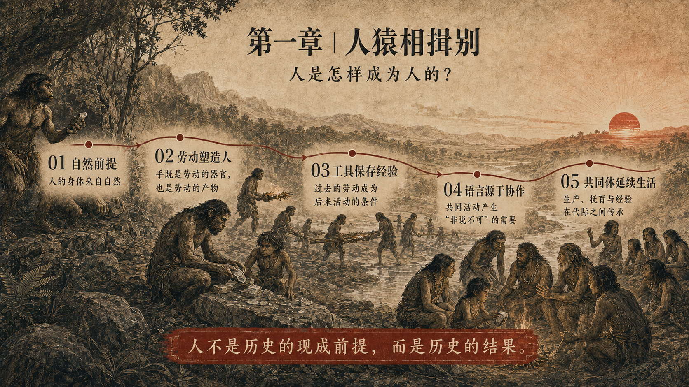

第一章｜人猿相揖别
人是怎样成为人的？

人猿相揖别。
——毛泽东《贺新郎·读史》
《家庭、私有制和国家的起源》讨论家庭、私有制和国家，第一章却没有从这三个名称中的任何一个开始。恩格斯先写“史前各文化阶段”，沿着生活资料的扩展，考察人从使用火和简单工具到掌握制陶、畜牧、耕作与冶炼的漫长过程。这不是在正题之外补一段远古见闻。书中的几种制度都以人与人的关系为内容；在追问它们怎样产生以前，必须先说明能够建立关系、保存经验并改变生活条件的人是怎样产生的。
如果把今天的人放到历史开端，此后的一切自然会显得轻而易举。一个带着现代社会全部观念和能力的人，只要遇见同类，各种制度便仿佛都能顺理成章地出现。可这个解释暗中完成了它本应说明的全部工作。它把几万年社会活动形成的人搬到起点，再让历史负责替他添置几种制度。
“人猿相揖别”首先斩断的就是这个虚构。人与猿的分别不是一次告别仪式，告别者也不是一个已经完成的人。人的身体来自自然，人从未走出自然；发生改变的，是他同自然发生关系的方式。这个改变经历了极其漫长的过程。自然界产生出能够劳动的身体，劳动又继续塑造这个身体及其能力。人是这个过程的结果，不是它的现成前提。
因此，不能用某一种已经形成的特征来轻易定义人。理性、语言和工具制造都只是已经显现的结果，真正的问题是这些能力在什么活动中形成，又为什么成为人的需要。一个定义可以把结果说得很整齐，却不能说明结果从哪里来。这里需要的不是给人贴上一个比动物高明的名称，而是追踪人成为人的实际运动。
马克思和恩格斯在《德意志意识形态》中把历史研究的前提规定为“现实的个人”，即这些个人的活动和他们的物质生活条件。现实的个人并不首先以某种既成的社会身份出现，而是有一定身体组织的自然存在。他必须先活下来，才会有后来的全部历史。维持生命需要从环境中取得生活资料，也需要照料尚不能独立生存的幼儿。
自然为生命提供材料，却没有替生命准备好生活。果实的成熟自有时节，猎物也不会停在原地等候；就连已经获得的火种也可能熄灭。动物同样影响周围环境，人类活动的特殊意义却在于：人开始制造生活资料，也就是在消费自然以前，先改变取得和使用自然物的方式。恩格斯因此写道：
“劳动和自然界在一起才是一切财富的源泉。”
这句话不许人把自己幻想成自然的创造者。离开自然提供的条件，劳动什么也不能生产。但自然的材料只有进入人的活动，才成为人的生活条件。一块石头可以在河边沉睡千年；人把它制成工具时，它便不再只是地质运动的结果，也成为人的目的取得对象形式的地方。
劳动最初不是一种值得赞美的品德，而是生命不能依靠自然的直接馈赠继续维持时所进行的活动。马克思和恩格斯把生产满足需要的资料称为“第一个历史活动”。历史不是等到文字出现、君王登场以后才开始；当活人开始以自己的活动生产生活条件，历史便已经有了最初的内容。
劳动改变自然，也改变劳动者。直立行走逐渐使手从行走中解放出来，但获得自由的手并没有因此立刻成为人的手。它在长期的实际活动中一点点取得新的灵巧。恩格斯说：
“手不仅是劳动的器官，它还是劳动的产物。”
手是劳动的前提，又在劳动中成为劳动的结果。结果并不留在活动的终点；已经改变的手又回到新的活动中，使更复杂的动作成为可能。身体和感觉的发展也参与这个过程。劳动者在改变对象时，会把对象的性质转化为自己的经验，手、眼和听觉由此受到训练。人取得支配自然的力量，同时改变自己作为自然存在的方式。
工具把这个过程推进了一步。手的动作随动作本身结束，磨制的石器却能保存下来。它是过去活动的结果，又成为后来活动的条件。后一代不必重新从赤手开始，可以接过已经制成的工具，学习其中保存的动作，并在原有形式上继续改变。动物的许多经验随着个体死亡而中断；人的活动则逐渐在身体之外取得了能够传递的形式。
制造工具还包含目的。石器尚未完成，制造者已经依照它将要取得的形式安排现在的敲击。尚不存在的结果，以目的的方式进入现实活动。但目的不是头脑凭空发出的命令。它来自现实需要，又只能根据已有经验和对象本身的性质来实现。意识不是劳动之外的统治者，而是劳动过程在头脑中的能动环节。
一个人即使制成了工具，也不能独自保存这个过程。工具不会自己说明用途，经验也不能越过个人生命自动传递。更重要的是，早期人类的生存本来就不是孤立个人能够稳定维持的。劳动从它获得人类形式之时起，就包含着人与人的共同活动。
共同活动不是许多个人偶然站在同一地点。它要求人们协调动作，辨认彼此面对的对象，并把自己的需要传达出去。劳动的发展使互相帮助和共同协作的场合不断增加。恩格斯用一句极朴素的话写出语言产生前的关头：
“这些正在形成中的人，已经到了彼此间有些什么非说不可的地步了。”
不是孤立的思想先在头脑里完成，然后寻找声音把自己搬运出去。共同活动先产生了交往的迫切需要，声音才逐渐取得能够为别人理解的意义。语言一经形成，又反过来组织经验，使共同劳动更易协调，也让过去的经验得以传给后来的人。劳动与语言由此互相推动，人的身体能力和社会联系也在这个过程中一同发展。
所以，人不是先完成自己，后来才加入社会。一个离开他人的婴儿不能仅凭生物遗传获得社会生活所需的能力。自然出生只产生一个尚待成长的生命；他还要在抚育和共同生活中接过前人留下的经验，才会成为社会的人。人类在生产生活资料的同时，也让下一代学会已有的生活方式。人的生命因而不只是在自然意义上繁殖，也在社会意义上被一代一代重新生产。
一次合作随着活动结束而结束，还不能构成持续的共同生活。眼前的生产必须同成员的照料结合起来，已经取得的经验也要越过个体生命，并在日常生活中形成一定的产品分配方式。共同活动只有形成稳定的习惯和责任，才能跨越一天的劳动和一代人的生命。共同体正是在这种生活的连续性中取得最初的现实内容。
共同体不是已经独立的个人为了获得额外利益才作出的选择。在生产能力极低、个人离开集体便难以生存的条件下，共同体本身就是生产和生活的力量。《德意志意识形态》把共同活动方式直接称为一种“生产力”。协作使个人能够完成独自做不到的事，代际传递则使共同生活不再受一代人寿命的限制。
人在这里第一次显示出自己的历史性。生产生活资料的活动不断带来新的需要，也把工具、经验和社会关系留给后来的人。人的产物不会全部随活动消失，而会变成下一代生活的条件。后来者从这些条件出发，又以自己的活动改变它们。历史由此不再是自然生命的简单重复，而成为人的活动不断积累并改变自身前提的过程。
现在可以看出，《家庭、私有制和国家的起源》为什么必须先写生活资料的生产。亲属秩序、财产关系乃至国家，都不可能由人的某种天性直接产生。它们要等到共同生活获得一定的生产方式和延续形式之后，才会在具体的历史条件中逐渐建立起来。
恩格斯在“史前各文化阶段”中按照生活资料生产的进步考察早期历史，随后才说：“家庭的发展与此并行。”这个次序十分严格。人必须先能够生产并延续自己的生活，才会在不同生产条件下形成不同的共同体和亲属关系；生产生活的方式发生变化，人与人结合的方式才取得新的历史内容。
第一章因此只取得一个起点：自然界产生的人在劳动中继续改变自己，而劳动从一开始就包含共同活动。正是这种共同活动，使个人取得的能力能够保存和传递。相揖而别的不是一个孤独个人，而是正在形成中的社会的人。
可是，这个最初的社会的人还极其脆弱。简陋的工具和不稳定的食物来源，使个人几乎没有独自面对自然的力量。共同体必须由此形成自己的生活秩序，安排生产资料的占有、成员的抚育以及公共事务。“人猿相揖别”以后，历史首先要回答的不是谁可以离开共同体，而是任何人为什么都不能离开共同体。
这便是下一章的问题：在生产力极其低下的时代，共同体怎样成为人的生存方式？
本章引用原文出处
- 毛泽东：《贺新郎·读史》，1964年春。
- 恩格斯：《家庭、私有制和国家的起源》第一章“史前各文化阶段”。
- 恩格斯：《劳动在从猿到人转变过程中的作用》。
- 马克思、恩格斯：《德意志意识形态》第一卷第一章“费尔巴哈”。
- 马克思：《资本论》第一卷第五章“劳动过程和价值增殖过程”第一节。